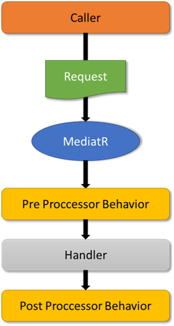

MediatR by Jimmy Bogard is a simple mediator implementation for .NET that allows you to process in-memory request (Commands) and notifications (Events). I’ve been using this library many years in my applications because allows me to follow the CQS (Command and Query separation) principle devised by Bertrand Meyer. The main value for this principle is that you can clear separate methods that change the state (commands) from methods that don’t (queries).
On the other hand, in our applications we have to deal with cross-cuttings concerns like logging, caching, validation, etc. Before using MediatR I used to move these concerns to the composition root (In my case to the REST API) using middlewares or some piece of framework’s infrastructure (ASP.NET Core) to avoid to duplicate it in many parts of my code.
One of the coolest features of MediatR is the concept of Behaviors. Behaviors allows you to build a pipeline, very similar to middlewares in ASP.NET Core.

A pipeline behavior is built using IPipelineBehavior<TRequest, TResponse> nad needs to implement on method:
Task<TResponse> Handle(TRequest request, CancellationToken cancellationToken, RequestHandlerDelegate<TResponse> next);
So you have to register your behaviors in the dependency injection container and MediatR will invoked in the order they were register and you can do some logic before/after each execution of the commands.
Logging
We are going to implement our first behavior. We want to log every request in MediatR in order to check if the request will be executed successfully. We are going to use ILogging interface:
public class LoggerPipelineBehavior<TRequest, TResponse>
: IPipelineBehavior<TRequest, TResponse>
{
private readonly ILogger<LoggerPipelineBehavior<TRequest, TResponse>> logger;
public LoggerPipelineBehavior(ILogger<LoggerPipelineBehavior<TRequest, TResponse>> logger)
{
this.logger = logger;
}
public async Task<TResponse> Handle(TRequest request, CancellationToken cancellationToken, RequestHandlerDelegate<TResponse> next)
{
Log.ExecutingRequest(logger, typeof(TRequest).Name);
var response = await next();
Log.ExecutedRequest(logger, typeof(TRequest).Name);
return response;
}
}
Just by implementing and registering this command into the MediatR pipeline all requests will be logging information about the execution (Success or not).
Validation
In my company we used to use Clean Architecture in our projects as a base architecture. (I’m assuming you are familiar with this architecture. So if you are not familiar, I recommend you this blog post Clean Architecture by by Robert C. Martin).

We like to do validation for our commands and queries in our Application bussines “layer” to avoid redundant validation in higher layers. For this reason we created a behavior using FluentValidation:
public class ValidatorPipelineBehavior<TRequest, TResponse> : IPipelineBehavior<TRequest, TResponse>
{
private readonly IEnumerable<IValidator<TRequest>> validators;
public ValidatorPipelineBehavior(IEnumerable<IValidator<TRequest>> validators)
{
this.validators = validators;
}
public Task<TResponse> Handle(TRequest request, CancellationToken cancellationToken, RequestHandlerDelegate<TResponse> next)
{
var failures = validators
.Select(validator => validator.Validate(request))
.SelectMany(result => result.Errors)
.Where(error => error != null)
.ToList();
if (failures.Any())
{
throw new ValidationException(failures);
}
return next();
}
}
With this behavior we are ensuring that data reaches our Application bussines “layer” will be valid. Below you can see an example of command validator using FluentValidation:
public class CreateNewsRequestValidator
: AbstractValidator<CreateNewsRequest>
{
public CreateNewsRequestValidator()
{
RuleFor(x => x.Headline)
.NotEmpty()
.MaximumLength(Configuration.News.HeadLineLength);
RuleFor(x => x.Content)
.NotEmpty()
.MaximumLength(Configuration.News.ContentLength);
}
}
Of course, our business domain will use this data and will apply the business rules.
If you want to do validation in high orders layer, for example ASP.NET Core API, you can reuse your custom validators.
Caching
The last concerns that I would like to talk is Caching.
Caching is one of the most important aspect when we want to improve the performance of our applications. There are a lot of information which is susceptible to cache and avoid to make a lot of queries to the database. Master tables are tables where data is seldom change, for example countries, states, postal codes… For data that frequently changed we can apply othe techniques such as caching data and invalidate when the data has changed and notified this changes using events (INotification).
Below you can see an example of this behavior:
public class CachePipelineBehavior<TRequest, TResponse> : IPipelineBehavior<TRequest, TResponse>
{
private readonly IDistributedCache cache;
private readonly ILogger<SGUKClassActionClaimantPortal> logger;
public CachePipelineBehavior(IDistributedCache cache, ILogger<SGUKClassActionClaimantPortal> logger)
{
Ensure.Argument.NotNull(cache, nameof(cache));
Ensure.Argument.NotNull(logger, nameof(logger));
this.cache = cache;
this.logger = logger;
}
public async Task<TResponse> Handle(TRequest request, CancellationToken cancellationToken, RequestHandlerDelegate<TResponse> next)
{
if (request is ICacheableRequest<TResponse> cacheableRequest)
{
var key = cacheableRequest.GetCacheKey();
return await cache.GetOrSet(
key,
miss: () => { Log.CacheMiss(logger, key); return next(); },
hit: (data) => Log.CacheHit(logger, key),
cacheableRequest.GetExpirationTime(),
cancellationToken);
}
var response = await next();
if (request is ICacheInvalidationRequest cacheInvalidationRequest)
{
await cache.Remove(cacheInvalidationRequest.GetCacheKey(), cancellationToken);
}
return response;
}
}
We are using two marker interfaces for our queries ICacheableRequest<TResponse> and ICacheInvalidationRequest (Kudos to my partner Marco for improve this behavior) in order to check if we have to cache the response or invalidate it.
We have to register in our dependency injection container. Below you can see an example of the registration using Scrutor:
public static IServiceCollection AddCustomMediatR(this IServiceCollection services) =>
services.Scan(scan => scan
.FromAssembliesOf(typeof(LoggerPipelineBehavior<,>))
.AddClasses(@class => @class.AssignableTo(typeof(IValidator<>)))
.AsImplementedInterfaces())
.AddMediatR(typeof(LoggerPipelineBehavior<,>))
.AddTransient(typeof(IPipelineBehavior<,>), typeof(LoggerPipelineBehavior<,>))
.AddTransient(typeof(IPipelineBehavior<,>), typeof(ValidatorPipelineBehavior<,>))
.AddTransient(typeof(IPipelineBehavior<,>), typeof(CachePipelineBehavior<,>))
.AddTransient(typeof(IPipelineBehavior<,>), typeof(UnitOfWorkPipelineBehavior<,>));
Conclusion
In this post I’ve tried to show you how to tackling cross-cutting concerns in our applications using the pipeline behaviors in MadiatR. We can create a lot of behaviors, for example an Unit of Work behavior to make our commands and events transactional.


Comments